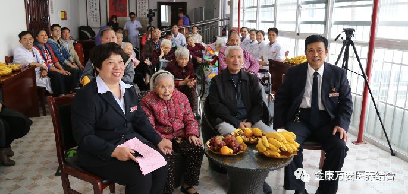
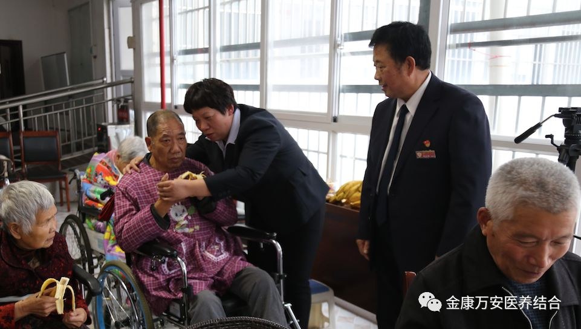

漯河金康护理院 “欢度重阳 梦圆金康”联欢会圆满结束
人气: "" 时间：2018-10-15
2018年10月15日下午四点，本着自娱自乐的主旨，漯河金康护理院“欢度重阳 梦圆金康”联欢会在四楼阳光房如期举行。
1989年我国政府把重阳节定为老人节以来，这个具有两千多年悠久历史的古老节日更加焕发出祥和温馨的浓厚氛围。在党和政府积极倡导以及社会各界的共同关注下，“尊老、爱老、敬老、助老”正日益成为文明社会动人的音符。

参加本次联欢会的院领导有业务院长张莉和后勤院长杨延顺，以及金康的家人、入住的老人、在院的患者。张莉院长在联欢会上致辞，在致辞中张院长还对各科室十个月来的成绩做出了肯定，并期望剩下几个月能再接再厉，打一场漂亮的收尾仗。

联欢会以《感恩的心》开场，告诉每一个人重阳节就是我们中国的感恩节，一个人只有拥有感恩的心，才会被幸福环绕。全场共有十个节目，有语言类、歌曲类、戏曲类等老人喜爱的节目，有脍炙人口的老曲，也有根据我们金康编制的新作品。节目在行云流水般进行，现场也是掌声阵阵。


节目以《你是上天的礼物》结尾，告诉我们遇见每一个人都是上天赐给我们的礼物，希望我们每一个人在这个特殊的日子都能有良好的心态去看待每一件事、每一个人。

幸福的时光总是那么短暂，但也总是源源不断。正像我们金康护理院一样，尽管在二十年时间里有太多的艰辛，但终究还是来了一场华丽的蝶变。
关爱今天的老人，就是关爱明天的自己。2018重阳节联欢会在欢快跳跃的音符中圆满结束，但是重阳节却带给我们一个重要的信息：那就是老年朋友需要爱、需要快乐和健康，需要一句深情的问候。
让我们在今后的事业中共同为老年人打造一个幸福的港湾。